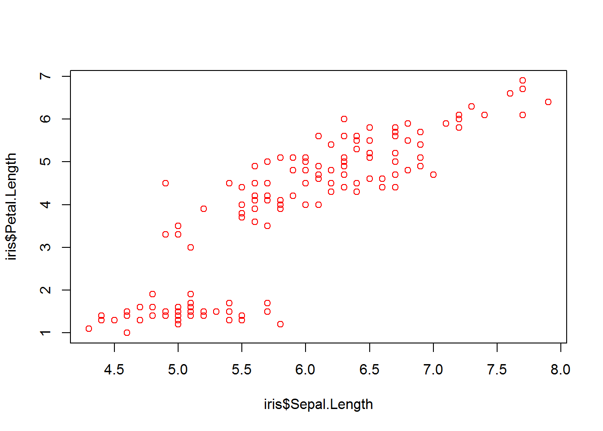

Capítulo 3 Tipos de indicadores y gráficos
A continuación se ´resentan dos tipos de opciones que se pueden construir en un libro ejemplo de bookdown.
En primer lugar, se presenta una tabla de resumenes.
3.1 Resumenes
summary(cars)## speed dist
## Min. : 4.0 Min. : 2.00
## 1st Qu.:12.0 1st Qu.: 26.00
## Median :15.0 Median : 36.00
## Mean :15.4 Mean : 42.98
## 3rd Qu.:19.0 3rd Qu.: 56.00
## Max. :25.0 Max. :120.003.2 Incluyendo gráficos
En segundo lugar, se presenta una tabla de gráficos.

3.3 Ecuaciones
A continuación se presenta una ecuación \[ \begin{equation} f\left(k\right) = \binom{n}{k} p^k\left(1-p\right)^{n-k} (\#eq:binom) \end{equation} \] Ahora en un entorno alineado
\[ \begin{align} g(X_{n}) &= g(\theta)+g'({\tilde{\theta}})(X_{n}-\theta) \notag \\ \sqrt{n}[g(X_{n})-g(\theta)] &= g'\left({\tilde{\theta}}\right) \sqrt{n}[X_{n}-\theta ] \tag{3.1} \end{align} \]
3.4 Referencias Cruzadas
Como se presentó en el Capítulo 2, existe un número elevado de definiciones…
3.6 Gráfico base 1
Gráfico 1
plot(pressure)
3.7 Gráfico base 2
Gráfico 2
plot(iris$Sepal.Length, iris$Petal.Length, col = "red")
3.8 videos
A continuación se presenta un ejemplo de insersión de videos en R